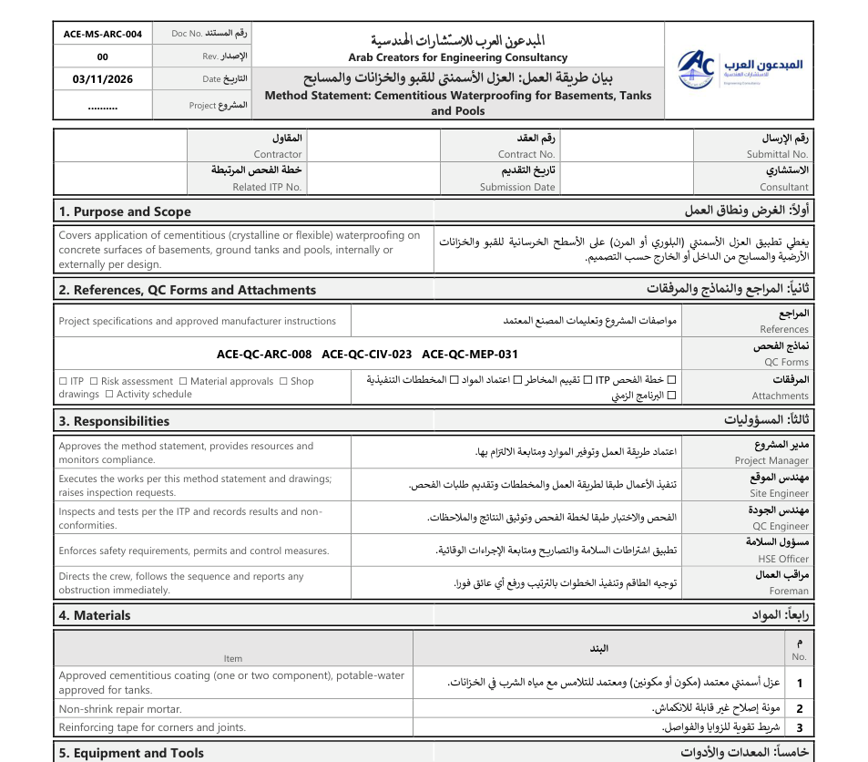

تحميل الملف مجانًاملف وورد قابل للتعديل، عربي وإنجليزي
بعض البنود اللي بيغطيها النموذج
- يغطي تطبيق العزل الأسمنتي (البلوري أو المرن) على الأسطح الخرسانية للقبو والخزانات الأرضية والمسابح من الداخل أو الخارج حسب التصميم.
- مواصفات المشروع وتعليمات المصنع المعتمد
- اعتماد طريقة العمل وتوفير الموارد ومتابعة الالتزام بها.
- تنفيذ الأعمال طبقا لطريقة العمل والمخططات وتقديم طلبات الفحص.
- الفحص والاختبار طبقا لخطة الفحص وتوثيق النتائج والملاحظات.
- توجيه الطاقم وتنفيذ الخطوات بالترتيب ورفع أي عائق فورا.
- عزل أسمنتي معتمد (مكون أو مكونين) ومعتمد للتلامس مع مياه الشرب في الخزانات.
- مونة إصلاح غير قابلة للانكماش.
طريقة الاستخدام
اكتب بيانات المشروع ورقم النموذج في الرأس، وعلّم على كل بند (مطابق، غير مطابق، لا ينطبق) أثناء المعاينة في الموقع، واكتب الملاحظات في العمود المخصص، ثم يوقّع المقاول والاستشاري. احتفظ بالنموذج مع طلب الفحص (RFI) في ملف البند.
النماذج من إعداد فريق المبدعون العرب للاستشارات الهندسية، ومسموح استخدامها وتعديلها في مشاريعك. يمنع إعادة نشرها أو بيعها.